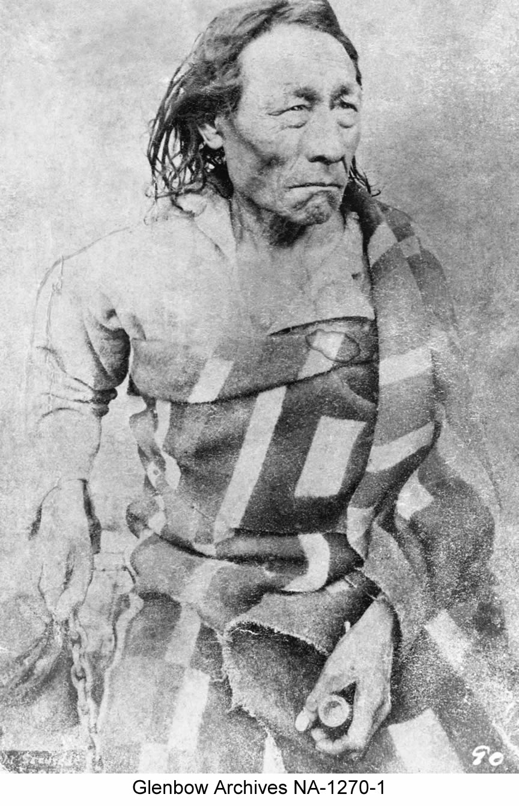

Fort Pitt September, 1876
Explaining Treaty Terms Again
On September 5, 1876, the Treaty party arrived ten days earlier than expected at Fort Pitt, (located between Fort Carlton and Fort Edmonton) to meet the “River” First Nations. They were mostly Woods Cree and Dene and had not been influenced by Christianity and farming as the others who signed Treaty at Fort Carlton (Stonechild and Waiser 22). Some of the Chiefs and their people were hunting on the prairies and the ones that were present wanted to wait for the others while a message was sent for them to attend the meeting. Chief Sweetgrass arrived the next day and met with the rest of the First Nations to discuss what had happened at Fort Carlton. Interpreter, Peter Erasmus, now employed with the government and travelling with the Treaty party translated the terms of the Treaty signed. He recounted the important points the Chiefs expressed regarding their physical and cultural survival, recounted the moving speeches of Ahtahkakoop and Mistawasis, and the special provisions that they negotiated to be included. For a time there was discussion regarding Erasmus’ words, but then Sweetgrass stood up to say, “Mistawasis and Ahtahkakoop I consider far wiser than I am; therefore if they have accepted this treaty for their people after many days of talk and careful thought, then I am prepared to accept for my people.” The other Chiefs agreed with him and they were ready to meet with Morris to accept the Treaty.
|  |
| Big Bear, while in prison after Riel Rebellion |
The Same Agreement
The same significant ceremony of the “pipe stem” opened the meeting with the participants on September 7, 1876. Gov. Morris addressed the crowd reassuring them that the Queen would look after them and the next two days were spent considering the words of Morris speaking on behalf of the Crown.
Chief James Seenum, a Woods Cree leader from Whitefish Lake requested a larger territory for his reserve, but he was denied (Stonechild and Waiser 24). Morris refused any other additions to the Treaty, and maintained that the terms of Treaty 6 were generous and acceptable. On September 9, the Chiefs and Headmen signed their approval to accept Treaty 6.
Big Bear Arrives
Just before the Treaty party left Fort Pitt, Big Bear arrived and asked to speak with Morris. He wanted to know why he was not notified of the meetings as he was out hunting on the plains. Morris agreed to hear Big Bear out, but the course of the Treaty proceedings with the other First Nations had already concluded and this put Big Bear in a difficult position to be able to negotiate any further.
Big Bear was adamant in his request to the government to create laws to regulate the hunting of the buffalo.
Also, he did not want his people to be under the rule of the Crown, and said to the people, “I heard the Governor was coming and I said I shall see him; when I see him I will make a request that he will save me from what I most dread that is: the rope to be about my neck.” Big Bear, a proud Cree, was using a metaphor to describe that he did not want to be treated like a horse, to be broken to a halter and rope (Ray, Miller and Tough 142). Reverend McKay translated Big Bear’s words, and when Morris heard this he interpreted it to mean that Big Bear did not want to be hanged by the government. As a result of Big Bear’s words and stance in opposition to Treaty, the government began to see him as a threat. The Treaty party left Fort Pitt and made their way back to Fort Garry.
Treaty Adhesion
Thirteen years later in 1889, the Lac La Ronge and Montreal Lake Bands adhered to Treaty Six which expanded the territory of Treaty Six. At that time, they as well were facing low fur prices, and poor hunting and fishing. (Ray, Miller, and Tough 143)
Although Treaty 6 was significant in advancing the settlement of the lands, First Nations faced difficult times ahead and the promises of Treaty were never fully realized to present day. Afterward, there were many First Nations who were upset because of a lack of consultation with them during the negotiations. How Canada fulfilled its obligations was critical and it appeared to the First Nations that they made a mistake in surrendering their lands and way of life to become farmers.
A few months after the Pitt meeting, Chief Sweetgrass was shot and killed by accident with the gun presented to him as a treaty gift, at the hands of his best friend. It remained to be seen whether it was a bad omen. (Stonechild and Waiser 26)